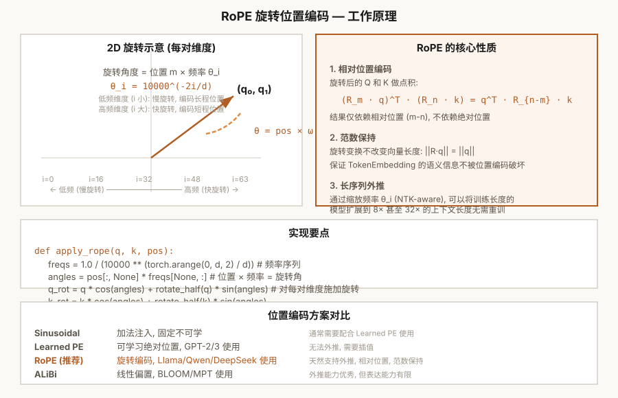

第2章 嵌入层与位置编码
实现 TokenEmbedding + Sinusoidal + RoPE——让模型理解语义与顺序
本章怎么学：关注“查表”和“位置信息”
nn.Embedding 理解成“用 token id 查一行向量”，再理解为什么 Transformer 不知道顺序，所以必须加入位置编码。RoPE 的矩阵推导可以第二遍再细看。- 前置知识：张量形状、矩阵查表、sin/cos 的基本概念。
- 学习目标：从 One-Hot 推导到可训练嵌入，解释分布假说、位置编码必要性，并证明 RoPE 点积只依赖相对位置。
- 课前阅读：阅读 word2vec/GloVe 的核心动机、Vaswani et al. (2017) 位置编码段落，以及 RoFormer 的 RoPE 定义。
- 课后阅读：比较 Sinusoidal、Learned PE、RoPE、ALiBi、NTK-aware scaling 的外推能力和工程取舍。
- 本章产出：TokenEmbedding、Sinusoidal 位置编码和 RoPE。
- 完成标准：你能跟踪形状从
[batch, seq]变成[batch, seq, d_model]。 - 练习产出：提交嵌入/位置编码实现、RoPE 相对位置数值验证图，以及一页关于外推失败模式的短报告；可用 Ch02 位置编码作业测试 检查核心实现。

图 2-1: RoPE 旋转位置编码——工作原理、核心性质与实现
2.1 从 One-Hot 到稠密嵌入——为什么需要分布式表示
第 1 章将文本转化为 token 序列 ，其中每个 。现在的问题是：如何将这个整数转化为神经网络可以处理的向量？
One-Hot 编码及其问题
最直接的想法是 One-Hot 编码：将 token 映射为一个长度为 的向量，第 位为 1，其余为 0。例如词表大小 5 时，"apple"（token 3）编码为 。
但 One-Hot 有三个根本性问题：
1. 维度灾难（Curse of Dimensionality）。典型词表 ，每个 token 就是一个 50000 维的向量。存储一个 batch（32 x 1024）的 One-Hot 需要 个 float——约 6.4 GB，完全不可接受。这不仅仅是存储问题：在高维空间中，所有点之间的距离趋于相等，"远近"概念消失（这是维度灾难在距离度量上的体现）。
2. 语义"零亲"（Semantic Flatness）。任意两个不同的 One-Hot 向量之间余弦相似度为 0。"king"和"queen"与"king"和"apple"在 One-Hot 空间中一样"不相似"——模型无法从表示中提取任何语义关系。
3. 参数效率极低。将 One-Hot 乘以一个 的权重矩阵等价于查表选择第 行。那为什么不直接查表呢？
分布式表示：核心突破
解决方案是可学习的稠密嵌入：用一个矩阵 （其中 ）将 token 映射到低维连续空间：
这就是 Token Embedding——等价于查表取第 行。关键区别在于：嵌入向量是可训练的。通过语言模型训练，语义相近的 token 会获得相近的向量。
分布假说（Distributional Hypothesis）
这是分布式表示的理论基础——"You shall know a word by the company it keeps"（Firth, 1957）。语义相近的词出现在相似的上下文中，因此它们应该具有相似的向量表示。在嵌入空间中：
- "king" 和 "queen" 出现的位置（上下文）有大量重叠 → 向量距离近
- "king" 和 "apple" 的上下文基本不重叠 → 向量距离远
- 类比推理： ——在 word2vec/GloVe 等静态词向量中常见，但它是语料、训练目标和评价方式共同形成的经验现象，不是嵌入层自动保证的数学性质
2.1A 从 word2vec/GloVe 到 LLM Token Embedding
CS224N 这类课程通常从 word vectors 开始，因为它们展示了一个核心思想：语义不是手写规则，而是可以从上下文统计中学习出来。现代 LLM 的 nn.Embedding 不再单独训练成静态词向量，但它仍继承了同一个表示学习问题：如何把离散 token 映射到可微、可比较、可组合的连续空间。
Skip-gram with Negative Sampling
word2vec 的 skip-gram 目标是：给定中心词 ，预测窗口内上下文词 。负采样版本把“真实上下文词”与“随机噪声词”区分开：
这里 是中心词向量， 是真实上下文词的输出向量，负样本来自噪声分布 。如果两个词经常共享上下文，它们会在训练中获得相似的向量方向。
从窗口共现到 loss：为什么这是可计算作业
skip-gram 的训练样本来自滑动窗口。给定 token 序列 [0, 1, 2, 1] 和窗口大小 1，中心词 1 会把左右相邻 token 0、2、2 计作上下文；这会形成一个 directed co-occurrence matrix 。Ch02 作业中的 build_cooccurrence_matrix 就让学生把这个统计过程写成代码。
SGNS loss 则把每个真实 (center, context) 对当作正例，把从噪声分布采样的 token 当作负例。对一个 batch：
作业函数 skipgram_negative_sampling_loss 的输入形状是 center_vectors [B,D]、positive_vectors [B,D] 和 negative_vectors [B,K,D]。这让学生看到：word vectors 不是抽象概念，而是由 dot product、sigmoid 和二分类 loss 训练出来的。
在 mean reduction 下还要除以 batch size。梯度下降会沿着负梯度更新：正例项把中心向量拉向真实上下文，负样本项把中心向量推离噪声上下文。Ch02 作业中的 sgns_center_gradient 要求学生把这个符号方向写成张量计算，并与 autograd 对齐。
SGNS 也可以从矩阵分解角度理解。给定 directed co-occurrence count 、中心词边际计数 、上下文词边际计数 和总共现数 ，PMI 写作：
在常见假设下，SGNS 学到的 dot product 与 shifted PMI 有紧密关系：负样本数 越大，目标 dot product 会整体向下平移 。Ch02 作业中的 shifted_pmi_matrix(cooccurrence, negative_samples) 让学生从共现矩阵显式计算这个统计量；未出现的 共现对 PMI 未定义，函数返回 -inf，如果要做 PPMI 才进一步裁剪到非负。
为了把“相似”和“类比”也落到可计算层面，Ch02 作业还加入 cosine_similarity_matrix 与 analogy_3cosadd。前者把 embedding 行向量归一化后计算两两余弦相似度；后者用 作为查询向量，并排除输入词后返回最相近词。学生应把它理解为静态词向量空间结构的诊断方法，而不是证明模型“理解”语义关系。
GloVe：从全局共现矩阵学习
GloVe 从全局词-词共现矩阵 出发，用加权最小二乘拟合共现对数：
与 skip-gram 主要利用局部窗口样本不同，GloVe 显式建模全局共现统计。Ch02 作业中的 glove_weighted_loss 要求学生只在非零共现项上计算加权残差，并使用 min((X_ij / x_max)^alpha, 1) 降低极低频或极高频共现对目标的支配。两者都说明：向量空间中的相似性来自训练目标和语料统计，而不是 one-hot ID 本身。
静态词向量与 LLM 嵌入的区别
| 维度 | word2vec/GloVe | LLM Token Embedding |
|---|---|---|
| 训练方式 | 通常先在语料上独立训练，再用于下游任务 | 与 Transformer、LM head 和 loss 端到端共同训练 |
| 表示对象 | 多为 word 或 subword 的静态向量 | token 的输入向量，后续层会生成上下文化表示 |
| 同一词多义 | 一个词通常只有一个向量，难区分语境 | 同一 token 的初始向量相同，但经过 attention 后上下文表示不同 |
| 类比现象 | 常用于观察线性结构，如 gender/country-capital | 不是主要评价方式，LLM 能力更多来自多层上下文计算 |
nn.Embedding 只负责把 token id 查成初始向量；真正的上下文语义要经过位置编码、注意力和多层 Transformer 才逐步形成。不要把“embedding 相似”误解为模型最终理解的全部。2.1B Worked Example：从共现计数到 PMI、SGNS 和类比
为了把 word vectors 从口号变成可计算对象，考虑一个只有三个词的 toy 词表：king、queen、apple。滑动窗口统计得到如下 directed co-occurrence matrix，行是 center word，列是 context word：
C_{center,context} | king | queen | apple | row sum |
|---|---|---|---|---|
| king | 0 | 8 | 1 | 9 |
| queen | 6 | 0 | 1 | 7 |
| apple | 1 | 1 | 0 | 2 |
| column sum | 7 | 9 | 2 | 18 |
PMI 衡量“比随机独立更常共同出现多少”
对 king 作为 center、queen 作为 context 的共现对：
对 king 和 apple：
这说明 king 与 queen 的共现频率高于独立假设下的期望，而 king 与 apple 在这个 toy 语料里接近独立。若 SGNS 使用 个负样本，shifted PMI 会整体减去 ；这不是说语义变差了，而是负采样目标改变了 dot product 的零点。
SGNS 把共现变成二分类训练信号
假设某个 batch 中正例 (center=king, context=queen) 的 dot product 为 1.5，两个负样本 apple 和另一个随机词的 dot product 分别为 -0.4 和 0.2。该样本的负对数似然为：
正例 dot product 越大，第一项 loss 越小；负样本 dot product 越小，后两项 loss 越小。训练不是直接给“king 和 queen 很像”这个标签，而是通过许多局部上下文二分类样本，让经常出现在相似上下文中的词获得相似向量。
类比推理是空间结构的诊断，不是目标函数保证
3CosAdd 查询 的含义是：从 king 的向量中减去与 man 相关的方向，再加上与 woman 相关的方向，然后找余弦相似度最高的候选。这个过程通常还要排除输入词 king、man、woman，否则最近邻可能只是原词本身。
类比成功依赖很多条件：语料中相关关系足够系统，向量经过合适训练，频率和多义性没有主导距离，评价集也接受单一词答案。因此本课程把类比题作为“向量空间是否学到某类线性规律”的检查，而不是把它作为语义理解的充分证明。
2.2 编程练习 1：实现 TokenEmbedding
PyTorch 的 nn.Embedding(V, d) 本质上就是一个可训练的查表操作。若嵌入矩阵 ，token id 的 one-hot 行向量 满足 。实际工程直接索引 E[token_id]，避免显式构造巨大 one-hot 张量；Ch02 作业中的 embedding_lookup_as_matmul 让学生写出这个等价关系。
🖥️ 练习 1：TokenEmbedding 模块
任务：实现 TokenEmbedding 模块，并实现 embedding_lookup_as_matmul(token_ids, embedding_weight)，用显式 one-hot 矩阵乘法复现 embedding_weight[token_ids]。
要求：
- 继承
nn.Module - 使用
nn.Embedding(vocab_size, d_model)作为内部查表 forward(x)输入形状(batch, seq_len)，输出形状(batch, seq_len, d_model)one_hot(token_ids)的形状应为(batch, seq_len, vocab_size)，与embedding_weight相乘后得到(batch, seq_len, d_model)- 输出乘以 （本章实现采用的 embedding 尺度约定）
- 让
forward返回的输出的 L2 范数大约为
# 预期用法
emb = TokenEmbedding(vocab_size=50000, d_model=768)
x = torch.randint(0, 50000, (2, 16)) # (batch=2, seq_len=16)
out = emb(x)
assert out.shape == (2, 16, 768)
print(f"参数: {sum(p.numel() for p in emb.parameters()):,}")
# 应输出: 38,400,000
💡 为什么乘以 √d_model？本章作业采用这个缩放，是为了让学生显式观察 embedding 数值尺度如何进入后续层。它不是所有 decoder-only 模型都必须采用的结构规则；真实实现会把初始化、残差尺度、LayerNorm 和训练稳定性一起设计。查看 nn.Embedding 的权重形状：emb.embed.weight.shape 返回 [50000, 768]。
2.2A Worked Example：embedding lookup、缩放与 tied LM head
设词表大小 V=3、嵌入维度 d=2，embedding 矩阵为：
输入 token ids 为 [[0, 2], [1, 0]]，直接查表得到形状 [B=2, T=2, d=2] 的张量：
显式 one-hot 乘法完全等价：one_hot(token_ids) 的形状是 [2,2,3]，与 E[3,2] 相乘后得到 [2,2,2]。实际模型不会构造这个巨大 one-hot 张量，因为查表更省内存和带宽。
若采用本章作业的 embedding 缩放约定，输出还要乘以 sqrt(d)=sqrt(2)。例如 token 2 的原始向量是 [3,4]，缩放后为 [3sqrt(2),4sqrt(2)]。缩放改变数值尺度，不改变参数个数；参数仍是 V*d=6。
如果把同一个矩阵用于输出层的 LM head（weight tying），某个隐藏状态 h=[1,1] 对三个 token 的 logits 是：
这意味着输入 token embedding 和输出分类器共享同一组 token 向量。若不用 weight tying，输入 embedding 需要 V*d 参数，输出投影还要另一个 d*V 参数；在大词表模型中这会显著增加参数量。后续 Ch06 的 causal LM loss 正是用每个位置的 hidden state 经过 LM head 产生 [B,T,V] logits，再与 shifted labels 计算交叉熵。
2.3 置换等变性——为什么位置编码不可或缺
嵌入层将每个 token 映射为一个固定的向量。如果没有位置编码，"dog bite" 和 "bite dog" 使用的是同一组 token 向量，只是排列顺序不同；模型没有额外信号说明哪个 token 在前、哪个 token 在后。
这源于 Self-Attention 的置换等变性（Permutation Equivariance）。更精确地说，Self-Attention 的输出满足：
其中 是一个置换矩阵。交换输入 token 的顺序，输出也会以同样方式交换——这是等变而不是不变。没有位置编码时，注意力层可以根据 token 内容建模相互作用，但无法知道这些 token 的绝对位置或相对顺序。
为什么 Self-Attention 是置换等变的？
从公式看，注意力分数的计算 涉及所有 token 对之间的点积。如果置换输入行（token 顺序），Q 和 K 的行也相应置换，但 的值只取决于 token 和 的内容，不取决于它们的位置。因此输出行也被置换——每个 token 的输出不变，只换位置。
这意味着没有位置编码时：
- "我打你"和"你打我"包含相同 token 集合，若缺少位置信号，模型只能看到内容重排，无法可靠利用主谓宾顺序
- "第 1 个 token"和"第 1000 个 token"会得到相同处理——没有位置衰减
- 模型无法利用词序这一最基本的语法信号
解决方案：向每个 token 的表示中加入位置信号，打破置换对称性。主流的方案分为两类：
- 加性编码：在嵌入向量上加位置向量，如 Sinusoidal、Learned PE
- 旋转编码：修改注意力计算，在 Q/K 中编码位置，如 RoPE
2.4 正弦位置编码——多尺度频率的直觉
Sinusoidal Positional Encoding（Vaswani et al., 2017）是 Transformer 原始论文中的位置编码方案。它用不同频率的正弦和余弦函数为每个位置生成固定的编码向量。
定义
其中 是位置索引， 是维度索引， 是嵌入维度。
Worked Example：d_model=4 时的正弦编码
当 d=4 时有两组 sin/cos 频率：第 0/1 维使用分母 10000^{0/4}=1，第 2/3 维使用分母 10000^{2/4}=100。因此低维变化更快，高维变化更慢：
| 位置 | 第 0 维 sin(pos) | 第 1 维 cos(pos) | 第 2 维 sin(pos/100) | 第 3 维 cos(pos/100) |
|---|---|---|---|---|
| 0 | 0.000 | 1.000 | 0.000 | 1.000 |
| 1 | 0.841 | 0.540 | 0.010 | 1.000 |
| 2 | 0.909 | -0.416 | 0.020 | 1.000 |
位置 0 的所有偶数维为 0、奇数维为 1，这正对应作业测试中的 row0[0::2] == 0 与 row0[1::2] == 1。更高频维度快速区分相邻位置；更低频维度在短距离内变化很小，用来承载更长尺度的位置变化。
为什么这样设计？
多尺度频率：低维度（小 ）使用高频率——sin/cos 波形变化快，相邻位置的编码差异大，适合编码局部位置信息。高维度（大 ）使用低频率——变化缓慢，适合编码全局位置信息。这种设计模仿了傅里叶特征：将位置编码在不同频率的基函数上，模型可以学习选择性地关注高频或低频维度。
相对位置的线性表示：对于任意偏移 ，位置 的编码可以表示为位置 编码的线性变换：
其中 是一个旋转矩阵（由 sin/cos 的和角公式推导）。这意味着模型可以通过学习线性变换来捕捉相对位置关系——这是 Sinusoidal 编码最重要但也最常被忽视的性质。
无训练参数 + 可外推：Sinusoidal 是固定函数，不需要学习，且对任意长度（包括训练时未见过的）都有定义。
2.5 编程练习 2：实现 Sinusoidal Positional Encoding
🖥️ 练习 2：SinusoidalEncoding 模块
任务：实现 SinusoidalEncoding 模块，为输入序列生成固定频率的正弦位置编码。
要求：
- 继承
nn.Module，内部无可训练参数 - 创建形状为
(max_len, d_model)的编码矩阵，用register_buffer持久化 forward(x)返回x + pe[:, :seq_len, :]（广播到 batch 维度）- 频率计算：
div_term = exp(-(2i) * log(10000) / d_model)用于数值稳定性 - 偶数列用
sin，奇数列用cos
# 预期用法 pe = SinusoidalEncoding(d_model=512, max_len=8192) x = torch.randn(2, 128, 512) out = pe(x) assert out.shape == (2, 128, 512) # 验证：位置 0 和位置 1 的编码不同 assert not torch.allclose(out[0, 0], out[0, 1])
💡 register_buffer 的作用：将 pe 注册为持久化缓冲区——它会随模型一起保存到 checkpoint 中（.state_dict()），且被 .to(device) 自动移动，但在训练中不更新梯度。这使得编码表随模型"带"着但不会影响反向传播。
2.6 RoPE 深度理论——旋转中编码相对位置
旋转位置编码（RoPE）由 Su et al.（2021）提出，是 Llama 2/3、Mistral、DeepSeek 等模型中常见的位置编码方案。它的核心创新在于：不再将位置信息加到嵌入向量上，而是修改 Q 和 K 的表示，使点积自动编码相对位置。
问题设定
设位置 的查询向量为 ，位置 的键向量为 。我们希望注意力分数 只依赖于 （相对位置），而不依赖于 和 的绝对值。
核心思想：旋转矩阵
对每个位置 ，用一个旋转矩阵 作用在 和 上：
是一个块对角正交矩阵，由 个 2x2 旋转子矩阵组成：
为什么旋转矩阵能让点积只依赖于相对位置？
关键在于 的性质：
推导中的关键步骤：。这是因为旋转矩阵的群性质——先旋转 （转置 = 逆旋转）再旋转 等价于直接旋转 。注意力分数只依赖于 ，绝对位置被完全消去。
RoPE 的优良性质
- 相对位置：推导证明点积只依赖于
- 范数保持：，因为旋转矩阵是正交的（）
- 相对相位：当 增大时，不同频率维度上的相位差会改变注意力打分模式。RoPE 给模型提供距离相关的归纳偏置，但不保证任意向量对的点积分数随距离单调下降，也不等于无限长上下文自动外推。
- 不影响 V：RoPE 只修改 Q 和 K，不影响 V。因为位置信息只影响"谁关注谁"，不影响"关注到什么内容"
2.7 编程练习 3：实现 RoPE
🖥️ 练习 3：RoPE 模块
任务：实现 RoPE 的旋转操作。给定 Q 和 K 张量，对每个位置施加对应角度的旋转。
要求：
- 输入 Q, K 形状
(batch, n_heads, seq_len, d_head) - 预计算
cos和sin表，形状可广播到(batch, n_heads, seq_len, d_head//2) - 实现
_rotate_half(x)：将x[..., d_head/2:]取反后与x[..., :d_head/2]交换 - 应用公式：
[x1*cos - x2*sin, x1*sin + x2*cos] - 返回
(q_out, k_out)，形状不变
# 预期用法 rope = RoPE(d_model=64, max_len=128) q = torch.randn(2, 8, 10, 64) # (batch, n_heads, seq_len, d_head) k = torch.randn(2, 8, 10, 64) q_rot, k_rot = rope(q, k) assert q_rot.shape == q.shape assert k_rot.shape == k.shape # 验证：旋转不改变范数 assert torch.allclose(q.norm(dim=-1), q_rot.norm(dim=-1), atol=1e-5)
💡 _rotate_half 的数学等价性：将 维向量视为 个复数 。乘以 等价于 。代码中的 _apply_rotary 正是这个操作的实数实现。
2.8 深入验证：RoPE 的相对位置性质
在上一节实现了 RoPE 之后，让我们通过数值实验来验证它的核心声称： 只依赖于 。
理论推导回顾
从旋转矩阵的性质出发：
因为每个 2x2 子矩阵满足：
因此 ——值只取决于 而不是 或 的绝对值。
实验设计
我们将取固定的 和 （不含位置信息，纯随机），然后对它们施加不同位置的 RoPE 旋转。如果性质成立，那么：
- 当 固定时，无论 和 取何值，点积结果应相同
- 例如，(m=5, n=3) 和 (m=10, n=8) 的点积应相同（因为 ）
- 不同 offset 的得分由 决定；它会随相对相位变化，但不应被要求关于 单调衰减
2.9 编程练习 4：验证 RoPE 的相对位置性质
🖥️ 练习 4：验证 只依赖于
任务：编写验证代码，证明 RoPE 旋转后的 q_m 和 k_n 的点积只与 m-n 有关。
要求：
- 构造单个固定的 q 和 k 向量（没有位置信息，形状
(1, 1, 1, d)） - 将它们复制到不同的位置 m 和 n，施加 RoPE 旋转
- 计算所有 (m, n) 配对的中点积得分，存储为
(seq_len, seq_len)矩阵 - 验证：对角线偏移相同的元素值相等——即
S[m][n]只取决于m-n - 验证：每条固定 offset 的对角线内部数值相同；不要假设主对角线最大或正负 offset 对称
- 核心判断使用张量切片完成；可以额外循环打印 offset 便于观察
# 预期结果: 打印出 8x8 的注意力分数矩阵 # 应观察到: 所有主对角线 (m=n) 值相等, 所有次对角线 (m=n+1) 值相等, ... # 形成一个 Toeplitz 矩阵（Toeplitz matrix = 每条对角线上的元素都相同） # ┌─────────────────────────────────────────────┐ # │ a b c d ... │ # │ e a b c ... │ # │ f e a b ... │ # │ g f e a ... │ # │ ... │ # └─────────────────────────────────────────────┘ # 每一条固定 offset 的对角线内部值应相等；不同 offset 的大小不必单调。
💡 实验结论：旋转后的 Q 和 K 点积构成一个Toeplitz 矩阵——每条固定 offset 的对角线内部值都相等。这意味着注意力分数只取决于 token 之间的相对位移。不同距离会对应不同相位组合，但对任意固定 q/k，分数不必随 单调下降；长上下文表现仍取决于训练分布、频率设计和缩放策略。
2.10 本章总结
- ✅ TokenEmbedding —— 从 token ID 到稠密向量的可训练查表
- ✅ 理解了 One-Hot 的维度灾难和分布式表示的语义优势
- ✅ 区分了 word2vec/GloVe 静态词向量与 LLM 的端到端 token embedding
- ✅ 掌握了置换等变性——为什么位置编码是必需的
- ✅ SinusoidalEncoding —— 多尺度频率的固定位置编码
- ✅ RoPE —— 旋转位置编码，点积仅依赖相对位置
- ✅ 从数学推导和数值实验验证了 RoPE 的相对位置性质
从第 3 章开始，我们将进入 LLM 最核心的部分——注意力机制。你将亲手实现 Scaled Dot-Product Attention、Causal Mask，并最终理解单头注意力的完整工作原理。
2.11 上下文学习导论：prompt 为什么会影响生成
完成 Embedding 与 RoPE 后，我们可以从模型内部重新理解 prompt：它不是一个独立于模型之外的"话术"，而是一段已经被分词、嵌入、加上位置信息的条件序列。自回归语言模型在每一步都学习条件分布 \(p(x_t \mid x_{<t})\)，所以前文 token 的内容、顺序和相对位置都会改变下一个 token 的概率分布。
从 token 序列到条件分布
设输入序列为 \(x_1,\ldots,x_n\)。经过嵌入层后，每个 token 得到语义向量；经过位置编码后，模型还能区分"示例在前、问题在后"与"问题在前、示例在后"。因此，同样的任务描述如果改变示例顺序、标签格式或边界符号，模型看到的条件序列就不同，最终生成分布也会不同。
Zero-shot、few-shot 与上下文学习
Zero-shot 只给任务指令，不给输入输出示例；模型依靠预训练中学到的语言模式和任务描述完成预测。Few-shot 在上下文中放入若干示例，模型参数没有更新，但示例的格式、标签空间和推理模式会进入条件序列，影响后续 token 的生成。
这类能力通常称为上下文学习。它与微调的区别很重要：微调通过梯度更新参数，把任务信息写入权重；上下文学习只在当前序列内提供条件信息，离开这段上下文后不会保留为新的模型参数。
长上下文中的位置问题
长上下文模型并不只是"把窗口变大"。当序列长度扩展时，模型需要稳定处理更远距离的相对位置，避免重要信息因为位置外推、注意力稀释或上下文组织混乱而失效。RoPE、ALiBi、YaRN 等方法都围绕一个核心问题展开：如何让模型在较长序列中仍能可靠地区分 token 之间的相对距离与顺序关系。
本章应掌握的建模视角
2. Few-shot 是上下文学习 —— 示例改变当前条件分布，但不更新参数
3. 顺序和边界很重要 —— 相同 token 的不同排列会形成不同的模型输入
4. 长上下文依赖位置外推 —— 位置编码决定模型能否稳定理解远距离关系
5. 注意力是下一章的核心 —— 它解释模型如何读取、比较和聚合上下文 token